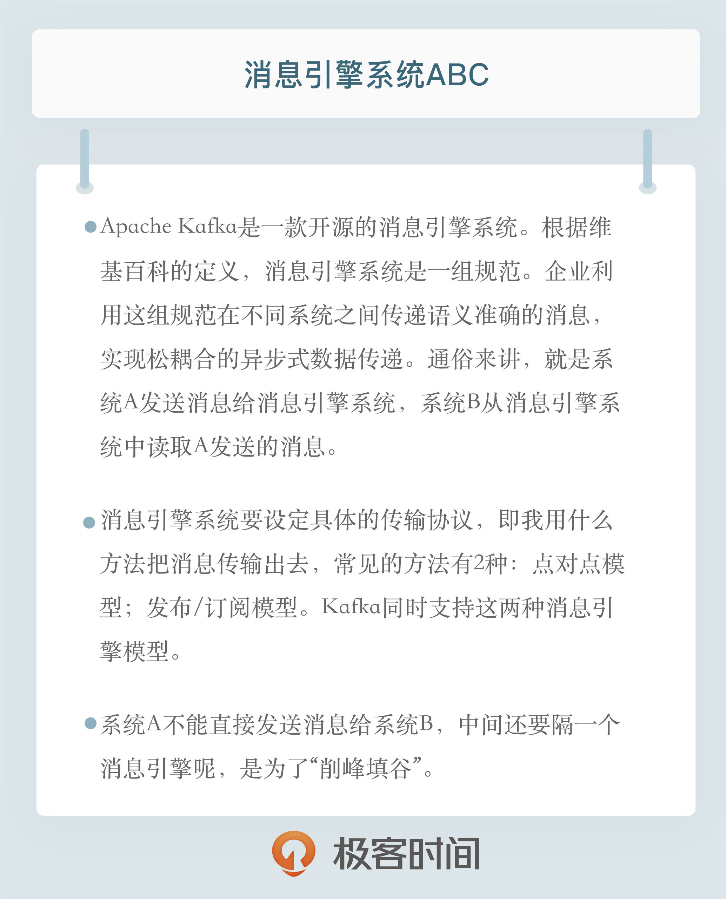

- 00 开篇词 为什么要学习Kafka？.md.html
- 01 消息引擎系统ABC.md.html
- 02 一篇文章带你快速搞定Kafka术语.md.html
- 03 Kafka只是消息引擎系统吗？.md.html
- 04 我应该选择哪种Kafka？.md.html
- 05 聊聊Kafka的版本号.md.html
- 06 Kafka线上集群部署方案怎么做？.md.html
- 07 最最最重要的集群参数配置（上）.md.html
- 08 最最最重要的集群参数配置（下）.md.html
- 09 生产者消息分区机制原理剖析.md.html
- 10 生产者压缩算法面面观.md.html
- 11 无消息丢失配置怎么实现？.md.html
- 12 客户端都有哪些不常见但是很高级的功能？.md.html
- 13 Java生产者是如何管理TCP连接的？.md.html
- 14 幂等生产者和事务生产者是一回事吗？.md.html
- 15 消费者组到底是什么？.md.html
- 16 揭开神秘的“位移主题”面纱.md.html
- 17 消费者组重平衡能避免吗？.md.html
- 18 Kafka中位移提交那些事儿.md.html
- 19 CommitFailedException异常怎么处理？.md.html
- 20 多线程开发消费者实例.md.html
- 21 Java 消费者是如何管理TCP连接的_.md.html
- 22 消费者组消费进度监控都怎么实现？.md.html
- 23 Kafka副本机制详解.md.html
- 24 请求是怎么被处理的？.md.html
- 25 消费者组重平衡全流程解析.md.html
- 26 你一定不能错过的Kafka控制器.md.html
- 27 关于高水位和Leader Epoch的讨论.md.html
- 28 主题管理知多少_.md.html
- 29 Kafka动态配置了解下？.md.html
- 30 怎么重设消费者组位移？.md.html
- 31 常见工具脚本大汇总.md.html
- 32 KafkaAdminClient：Kafka的运维利器.md.html
- 33 Kafka认证机制用哪家？.md.html
- 34 云环境下的授权该怎么做？.md.html
- 35 跨集群备份解决方案MirrorMaker.md.html
- 36 你应该怎么监控Kafka？.md.html
- 37 主流的Kafka监控框架.md.html
- 38 调优Kafka，你做到了吗？.md.html
- 39 从0搭建基于Kafka的企业级实时日志流处理平台.md.html
- 40 Kafka Streams与其他流处理平台的差异在哪里？.md.html
- 41 Kafka Streams DSL开发实例.md.html
- 42 Kafka Streams在金融领域的应用.md.html
- 加餐 搭建开发环境、阅读源码方法、经典学习资料大揭秘.md.html
- 用户故事 黄云：行百里者半九十.md.html
- 结束语 以梦为马，莫负韶华！.md.html
- 捐赠
01 消息引擎系统ABC
01 消息引擎系统ABC
你好，我是胡夕。欢迎你来到“Kafka核心技术与实战”专栏。如果你对Kafka及其背后的消息引擎、流处理感兴趣，很高兴我们可以在此相聚，并在未来的一段日子里一同学习有关Kafka的方方面面。
毫无疑问，你现在对Apache Kafka一定充满了各种好奇，那么今天就允许我先来尝试回答下Kafka是什么这个问题。对了，先卖个关子，在下一期我还将继续回答这个问题，而且答案是不同的。那么，Kafka是什么呢？用一句话概括一下：Apache Kafka是一款开源的消息引擎系统。
倘若“消息引擎系统”这个词对你来说有点陌生的话，那么“消息队列”“消息中间件”的提法想必你一定是有所耳闻的。不过说实话我更愿意使用消息引擎系统这个称谓，因为消息队列给出了一个很不明确的暗示，仿佛Kafka是利用队列的方式构建的；而消息中间件的提法有过度夸张“中间件”之嫌，让人搞不清楚这个中间件到底是做什么的。
像Kafka这一类的系统国外有专属的名字叫Messaging System，国内很多文献将其简单翻译成消息系统。我个人认为并不是很恰当，因为它片面强调了消息主体的作用，而忽视了这类系统引以为豪的消息传递属性，就像引擎一样，具备某种能量转换传输的能力，所以我觉得翻译成消息引擎反倒更加贴切。
讲到这里，说点题外话。我觉得目前国内在翻译国外专有技术词汇方面做得不够标准化，各种名字和提法可谓五花八门。我举个例子，比如大名鼎鼎的Raft算法和Paxos算法。了解它的人都知道它们的作用是在分布式系统中让多个节点就某个决定达成共识，都属于Consensus Algorithm一族。如果你在搜索引擎中查找Raft算法，国内多是称呼它们为一致性算法。实际上我倒觉得翻译成共识算法是最准确的。我们使用“一致性”这个字眼太频繁了，国外的Consistency被称为一致性、Consensus也唤作一致性，甚至是Coherence都翻译成一致性。
还是拉回来继续聊消息引擎系统，那这类系统是做什么用的呢？我先来个官方严肃版本的答案。
根据维基百科的定义，消息引擎系统是一组规范。企业利用这组规范在不同系统之间传递语义准确的消息，实现松耦合的异步式数据传递。
果然是官方定义，有板有眼。如果觉得难于理解，那么可以试试我下面这个民间版：
系统A发送消息给消息引擎系统，系统B从消息引擎系统中读取A发送的消息。
最基础的消息引擎就是做这点事的！不论是上面哪个版本，它们都提到了两个重要的事实：
- 消息引擎传输的对象是消息；
- 如何传输消息属于消息引擎设计机制的一部分。
既然消息引擎是用于在不同系统之间传输消息的，那么如何设计待传输消息的格式从来都是一等一的大事。试问一条消息如何做到信息表达业务语义而无歧义，同时它还要能最大限度地提供可重用性以及通用性？稍微停顿几秒去思考一下，如果是你，你要如何设计你的消息编码格式。
一个比较容易想到的是使用已有的一些成熟解决方案，比如使用CSV、XML亦或是JSON；又或者你可能熟知国外大厂开源的一些序列化框架，比如Google的Protocol Buffer或Facebook的Thrift。这些都是很酷的办法。那么现在我告诉你Kafka的选择：它使用的是纯二进制的字节序列。当然消息还是结构化的，只是在使用之前都要将其转换成二进制的字节序列。
消息设计出来之后还不够，消息引擎系统还要设定具体的传输协议，即我用什么方法把消息传输出去。常见的有两种方法：
- 点对点模型：也叫消息队列模型。如果拿上面那个“民间版”的定义来说，那么系统A发送的消息只能被系统B接收，其他任何系统都不能读取A发送的消息。日常生活的例子比如电话客服就属于这种模型：同一个客户呼入电话只能被一位客服人员处理，第二个客服人员不能为该客户服务。
- 发布/订阅模型：与上面不同的是，它有一个主题（Topic）的概念，你可以理解成逻辑语义相近的消息容器。该模型也有发送方和接收方，只不过提法不同。发送方也称为发布者（Publisher），接收方称为订阅者（Subscriber）。和点对点模型不同的是，这个模型可能存在多个发布者向相同的主题发送消息，而订阅者也可能存在多个，它们都能接收到相同主题的消息。生活中的报纸订阅就是一种典型的发布/订阅模型。
比较酷的是Kafka同时支持这两种消息引擎模型，专栏后面我会分享Kafka是如何做到这一点的。
提到消息引擎系统，你可能会问JMS和它是什么关系。JMS是Java Message Service，它也是支持上面这两种消息引擎模型的。严格来说它并非传输协议而仅仅是一组API罢了。不过可能是JMS太有名气以至于很多主流消息引擎系统都支持JMS规范，比如ActiveMQ、RabbitMQ、IBM的WebSphere MQ和Apache Kafka。当然Kafka并未完全遵照JMS规范，相反，它另辟蹊径，探索出了一条特有的道路。
好了，目前我们仅仅是了解了消息引擎系统是做什么的以及怎么做的，但还有个重要的问题是为什么要使用它。
依旧拿上面“民间版”举例，我们不禁要问，为什么系统A不能直接发送消息给系统B，中间还要隔一个消息引擎呢？
答案就是“削峰填谷”。这四个字简直比消息引擎本身还要有名气。
我翻了很多文献，最常见的就是这四个字。所谓的“削峰填谷”就是指缓冲上下游瞬时突发流量，使其更平滑。特别是对于那种发送能力很强的上游系统，如果没有消息引擎的保护，“脆弱”的下游系统可能会直接被压垮导致全链路服务“雪崩”。但是，一旦有了消息引擎，它能够有效地对抗上游的流量冲击，真正做到将上游的“峰”填满到“谷”中，避免了流量的震荡。消息引擎系统的另一大好处在于发送方和接收方的松耦合，这也在一定程度上简化了应用的开发，减少了系统间不必要的交互。
说了这么多，可能你对“削峰填谷”并没有太多直观的感受。我还是举个例子来说明一下Kafka在这中间是怎么去“抗”峰值流量的吧。回想一下你在极客时间是如何购买这个课程的。如果我没记错的话极客时间每门课程都有一个专门的订阅按钮，点击之后进入到付费页面。这个简单的流程中就可能包含多个子服务，比如点击订阅按钮会调用订单系统生成对应的订单，而处理该订单会依次调用下游的多个子系统服务 ，比如调用支付宝和微信支付的接口、查询你的登录信息、验证课程信息等。显然上游的订单操作比较简单，它的TPS要远高于处理订单的下游服务，因此如果上下游系统直接对接，势必会出现下游服务无法及时处理上游订单从而造成订单堆积的情形。特别是当出现类似于秒杀这样的业务时，上游订单流量会瞬时增加，可能出现的结果就是直接压跨下游子系统服务。
解决此问题的一个常见做法是我们对上游系统进行限速，但这种做法对上游系统而言显然是不合理的，毕竟问题并不出现在它那里。所以更常见的办法是引入像Kafka这样的消息引擎系统来对抗这种上下游系统TPS的错配以及瞬时峰值流量。
还是这个例子，当引入了Kafka之后。上游订单服务不再直接与下游子服务进行交互。当新订单生成后它仅仅是向Kafka Broker发送一条订单消息即可。类似地，下游的各个子服务订阅Kafka中的对应主题，并实时从该主题的各自分区（Partition）中获取到订单消息进行处理，从而实现了上游订单服务与下游订单处理服务的解耦。这样当出现秒杀业务时，Kafka能够将瞬时增加的订单流量全部以消息形式保存在对应的主题中，既不影响上游服务的TPS，同时也给下游子服务留出了充足的时间去消费它们。这就是Kafka这类消息引擎系统的最大意义所在。
如果你对Kafka Broker、主题和分区等术语还不甚了解的话也不必担心，我会在专栏后面专门花时间介绍一下Kafka的常见概念和术语。
在今天结束之前，我还想和你分享一个自己的小故事。在2015年那会儿，我花了将近1年的时间阅读Kafka源代码，期间多次想要放弃。你要知道阅读将近50万行源码是多么痛的领悟。我还记得当初为了手写源代码注释，自己写满了一个厚厚的笔记本。不过幸运的是我坚持了下来，之前的所有努力也没有白费，以至于后面写书、写极客时间专栏就变成了一件件水到渠成的事情。
最后我想送给你一句话：聪明人也要下死功夫。我不记得这是曾国藩说的还是季羡林说的，但这句话对我有很大影响，当我感到浮躁的时候它能帮我静下心来踏踏实实做事情。希望这句话对你也有所启发。切记：聪明人要下死功夫！

开放讨论
请谈谈你对消息引擎系统的理解，或者分享一下你的公司或组织是怎么使用消息引擎来处理实际问题的。
欢迎写下你的思考和答案，我们一起讨论。如果你觉得有所收获，也欢迎把文章分享给你的朋友。
© 2019 - 2023 Liangliang Lee. Powered by gin and hexo-theme-book.